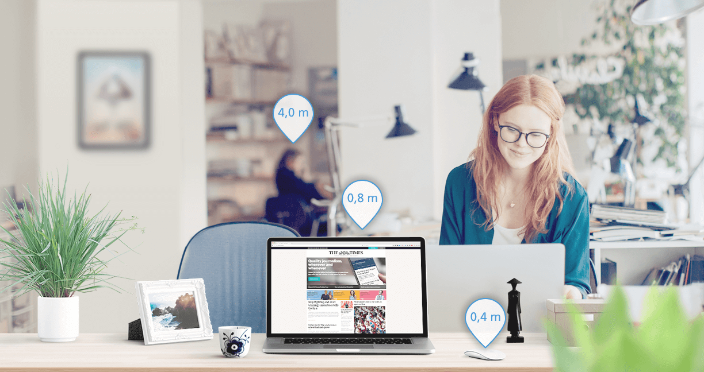
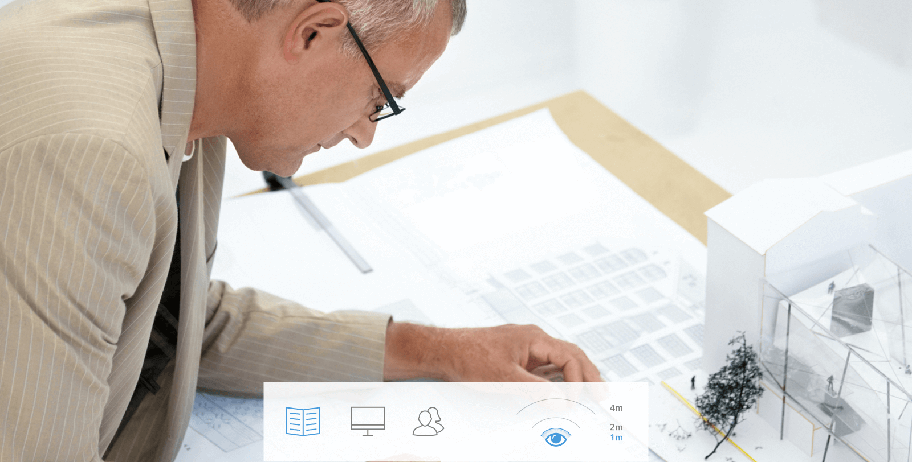

Office Lenses:
enjoy comfortable vision on the job.
Here's one colleague you can always count on: ZEISS Office Lenses have been specially optimised for the office and computer screen, making the average working day easier on your eyes. These lenses help you concentrate and work without tiring your eyes.

ZEISS Office Lenses.
Everything at a glance.
People usually notice the change when they're 35 or older: working at a computer screen and shifting their eyes – i.e. from the keyboard to the monitor or from the calendar to the telephone – is suddenly more stressful for their eyes. In order to see clearly at different distances, they often unconsciously assume an uncomfortable posture, e.g. by leaning forward or raising their head. Back and neck pains along with dry or teary eyes are just some of the possible consequences. ZEISS Office Lenses help prevent this type of visual stress: they are customised for your particular vision needs while on the job and are – unlike reading or progressive lenses – optimised for all required distances while working in front of a computer screen.
Optician Search
Find a Zeiss Optician near you

Smooth, perfect vision – no matter where you look.
A lens design that is as complex as it is comfortable: ZEISS progressive lenses provide you with clear vision immediately whenever you shift your eyes. And the transition is smooth as can be, finally making blurred images in the transitional zone a thing of the past.
Headaches, back problems, signs of fatigue. Why reading and progressive lenses aren't always an effective replacement.
Spectacles with standard reading or progressive lenses are generally not ideal for working at the computer because the relevant areas of the lens are not optimised for office work. Reading glasses, for example, only enable optimum vision for a short distance – too short for working at the computer or looking at your desk. With progressive lenses, however, the wearer looks at the monitor through the lower area of the lens and must tilt their head upwards in order to see the screen clearly. Both types of lenses promote an unnatural posture while sitting, potentially causing muscle tension in your back, shoulders and back as well as headaches.
Seeing digital. Spectacle lenses for working in today's world.
Up to any challenge. ZEISS Office Lenses feature our Digital Inside® Technology, a specially optimised near zone that enables fast, comfortable focusing – such as when switching your gaze from your mobile phone to the computer screen and back again. These lenses not only provide you with stress-free, clear vision when using digital devices, they are also perfect for reading books and magazines. They help prevent uncomfortable head and body posture, give your eyes a break and reduce digital eye strain.
Your vision needs on the job. What is your work situation?
Depending on the job, our eyes must master very different challenges. Generally, a distinction is made between the following three types of work situations.

Reading workstation
For those people who primarily read documents at work – e.g. architects, editors or tax advisors. The most important factor for their Office Lenses is a greater focus on the reading area with a maximum visual distance of one meter. The wider distance area provides the wearer with significantly greater comfort while reading – unlike traditional reading glasses that are usually optimised for only 40-50 cm.
Workstation with a computer monitor
These people primarily switch their focus from the keyboard to the screen, e.g. programmers, journalists or call centre employees. Their Office Lenses should offer clear, natural vision ranging from a reading distance all the way to a distance of maximum two meters – that's ideal for the office environment.
An indoor workplace with a lot of customer contact
These people often have face-to-face contact with customers, repeatedly stand up and move away from their workstation and also work at a computer, e.g. in retail or manufacturing. Their optimum lens design should provide natural vision which extends from the reading zone all the way to the maximum distance of four metres.
A winning team. Enjoy additional visual comfort in artificial light without straining your eyes.
No matter if it's a smartphone, an LED lamp, a monitor, TV, tablet or an e-reader: modern light sources emit more blue light than we've ever experienced before. Many people find this light unpleasant and stressful because it adversely impacts our biorhythms and may even be dangerous for our eyes. A blue light filter in the spectacle lens can provide you with more comfortable vision.

Extremely thin lenses that are as light as a feather. Dress to impress.
No matter if they're made of plastic or glass: cutting-edge production methods enable the manufacture of incredibly thin, light lenses, even with a high prescription and special visual impairments. You'll barely notice you're wearing these lightweight champions at all.
F.Y.I.: many clear spectacle lenses from ZEISS – without tints – also feature a high-performance UV coating. The special properties of the lens filter harmful sunlight and provide your eyes with lasting protection from UV rays.

Scratches and dirt don't stand a chance. More robust than ever.
High-performance lens coatings make your glasses extremely durable against scratches or adhesive dirt. The benefit: your lenses remain dirt-free for longer, making them significantly easier to clean. See better, look better – thanks in part to the latest anti-reflective coating.


5 Tips for better comfortable vision with Computer glasses.